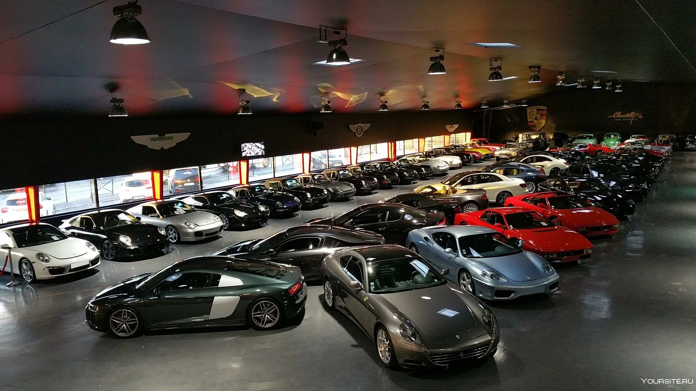
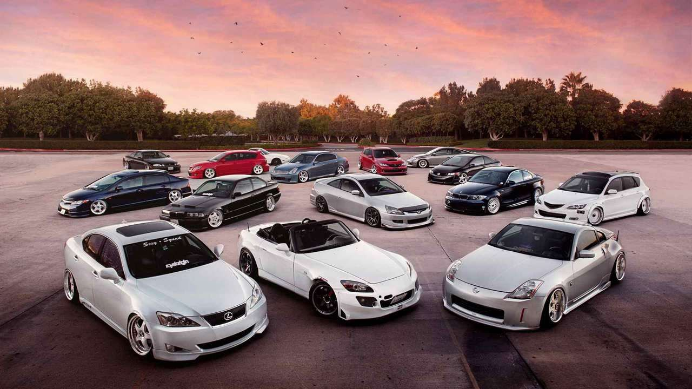

Однажды, в красивейшем городе Владивостоке, появилась компания под названием "Cars mobile". История ее основания была незаурядной и волнующей. Главный герой этой истории, Алексей, был страстным автолюбителем с мечтой о создании бизнеса, связанного с автомобилями. Его любовь к этому делу была столь большой, что он решил воплотить свои мечты в жизнь. Знакомство с партнером по имени Андрей, долгие разговоры и обсуждения привели их к возможности создания компании, которая предоставляла бы услуги по аренде автомобилей для местных жителей и туристов. Они верили, что Владивосток, город с прекрасными пейзажами и бурной жизнью, нуждался в таком сервисе. Их предприимчивость и решимость привели к основанию "Cars mobile". Они заключили соглашения с местными дилерами, приобрели несколько автомобилей для старта и начали рекламную кампанию. С каждым днем количество клиентов росло, и "Cars mobile" становилась все более известной и узнаваемой компанией. Алексей и Андрей работали с энтузиазмом и старались предоставить клиентам лучший сервис. Они арендовали новейшие модели автомобилей, создавали удобные условия аренды и всегда стремились удовлетворить потребности каждого клиента. С каждым годом "Cars mobile" становилась все более успешной. Компания расширила свои возможности и добавила к ассортименту услуги водителя на прокат, что сделало ее еще более привлекательной для клиентов. Сегодня "Cars mobile" является одной из ведущих компаний по прокату автомобилей во Владивостоке. Она славится своим качественным обслуживанием, разнообразием предлагаемых моделей и заботой о каждом клиенте. История основания "Cars mobile" стала примером успеха и роста для многих предпринимателей Владивостока. Алексей и Андрей продолжают развивать свой бизнес и мечтают о расширении компании в других городах России.
В компании можно встретить различные иномарки автомобилей. Некоторые из них включают в себя BMW, Mercedes-Benz, Audi, Volkswagen, Toyota, Honda, Nissan и Ford. Эти марки автомобилей широко распространены и популярны среди различных категорий покупателей. Они предлагают разнообразные модели, от спортивных седанов и кроссоверов до удобных семейных автомобилей. Встреча этих иномарок в компании свидетельствует о разнообразии предпочтений и вкусов сотрудников.
Cars Mobile – ведущая компания в автомобильной индустрии – сегодня ощущает себя крайне успешно. Её капитализация постоянно растет, отражая стабильное и устойчивое финансовое положение компании. В настоящее время, благодаря сильной брендовой идентичности и высокому качеству своей продукции, Cars Mobile продолжает занимать лидирующие позиции на рынке. Стремительное развитие технологий и последующая адаптация позволяют компании успешно конкурировать и удовлетворять потребности клиентов во всемирном масштабе. Все эти факторы суммируются в общем успехе и прочной позиции, которую Cars Mobile обладает в наши дни.
